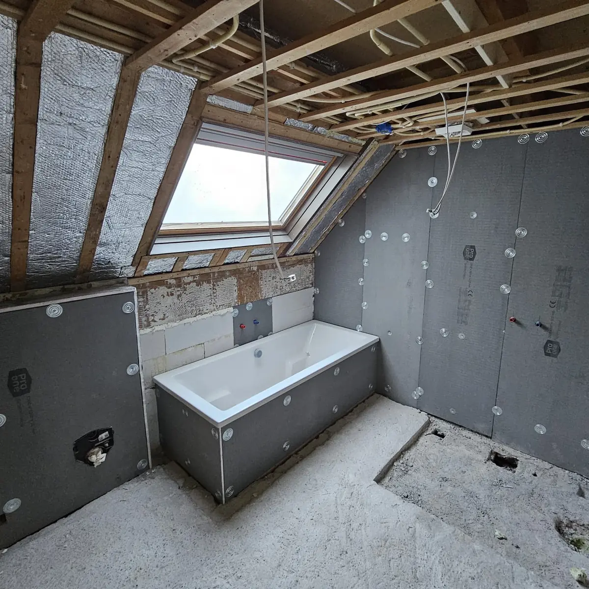
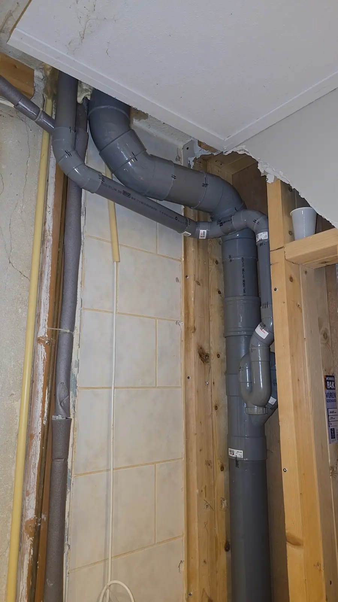
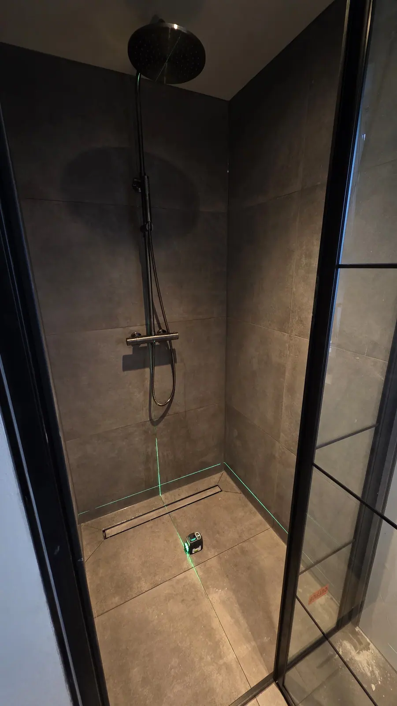
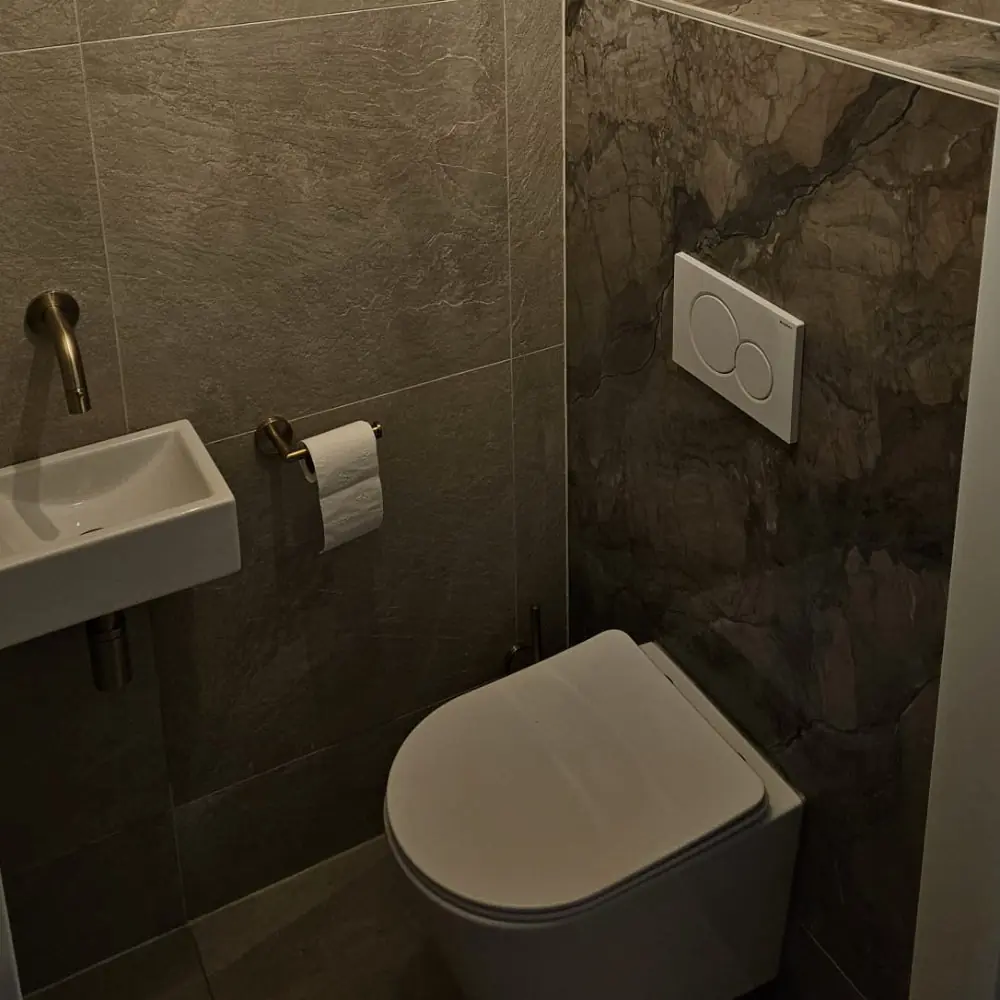

Loodgieter in Emmen en omgeving
Waterleiding of afvoer verleggen, een keuken aansluiten of sanitair plaatsen? Oosterveld verzorgt het leidingwerk, netjes en op één planning met je elektra.
Leidingwerk en aansluitingen, netjes geregeld
Bij een keuken, badkamer of verbouwing hoort leidingwerk. Oosterveld verzorgt het loodgieterwerk in Emmen en omgeving, en kan het combineren met elektra. Zo heb je één vakman en één planning.
- Waterleiding aanleggen of verleggen
- Afvoer aanleggen of verleggen
- Keuken aansluiten en klaarmaken voor plaatsing
- Sanitair en kranen aansluiten
- Leidingwerk bij badkamer- en toiletrenovatie

Loodgieterwerk bij jou thuis
Keuken aansluiten
Water en afvoer aansluiten, en de aansluitingen klaarmaken voor je nieuwe keuken.
Leidingen verleggen
Een nieuwe indeling vraagt om aangepaste waterleiding en afvoer. Wij leggen ze netjes aan.
Sanitair aansluiten
Kranen, toilet, wastafel en douche aansluiten.
Bij een badkamer
Volledig leidingwerk als onderdeel van je badkamer- of toiletrenovatie.
Samen met elektra
Een nieuwe keuken of badkamer vraagt vaak om leidingwerk én elektra. Bij ons regel je beide in één keer. Lees meer over onze elektrawerkzaamheden of badkamer renovatie.
Leidingwerk in de praktijk
Afvoerleidingen, een douche die wordt uitgelijnd en leidingwerk bij een badkamer in aanbouw.



Wat klanten zeggen
Reviews van klanten van Oosterveld.
“Blij dat we Jasper hadden gebeld. We hadden een probleem en wat is dat perfect opgelost. Geweldig onze dank Jasper.”
“Uitstekend uitgevoerd, netjes achtergelaten, vriendelijk contact.”
“Super snelle reactie op mijn aanvraag op Werkspot, snel een afspraak, keurig werk en wederom snel een factuur. Absoluut een aanrader! Dank je wel Jasper voor je werk.”
“Een betrouwbare, deskundige en klantgerichte vakman, dat is Jasper! Na veel wisselende ervaringen, eindelijk een vakman gevonden die doet wat hij zegt en zegt wat hij doet.”
Veelgestelde vragen
Kunnen jullie een keuken aansluiten?
Ja. We sluiten water en afvoer aan, en maken de keukenaansluitingen klaar voor plaatsing. Voor de elektra kunnen we ook zorgen.
Kunnen jullie waterleiding en afvoer verleggen?
Ja. Bij een verbouwing of nieuwe indeling leggen we waterleiding en afvoer aan of verleggen we ze.
Doen jullie ook leidingwerk bij een badkamerrenovatie?
Ja. Leidingwerk hoort bij onze badkamer- en toiletrenovaties, zodat je geen aparte loodgieter nodig hebt.
Kan ik loodgieterwerk en elektra tegelijk laten doen?
Ja, dat is juist handig. Eén vakman regelt leidingwerk en elektra, dus één afspraak en één planning.
Hoe vraag ik een richtprijs of offerte aan?
Via het formulier op deze site, per WhatsApp of telefonisch. Je krijgt eerst een richtprijs. Daarna komen we bij je langs voor de opname en ontvang je een definitieve prijs.
Klaar voor je richtprijs?
Vul je wensen in en ontvang snel een richtprijs. Daarna komen we langs voor een vaste prijs.